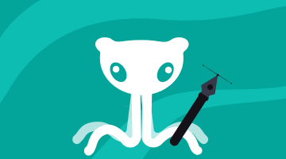

Hi, I give talks about software.
I'm Michele Giacobazzi. I speak at conferences and meetups about domain modelling, building with AI in the loop, and shipping without drama. English or Italian, your pick.

Reserved
Talks graph sticker goes here (future feature).
Talks graph sticker goes here (future feature).
Catch me next
- Ticino Dev Days EN12 Mar 2027, Lugano
- Milano Craft Night IT08 Apr 2027, Milan